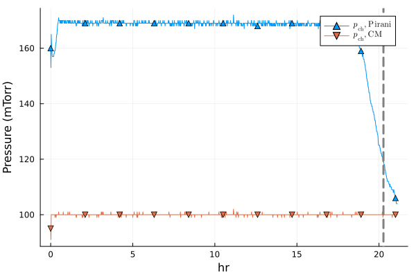
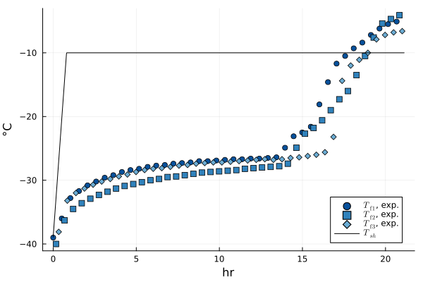
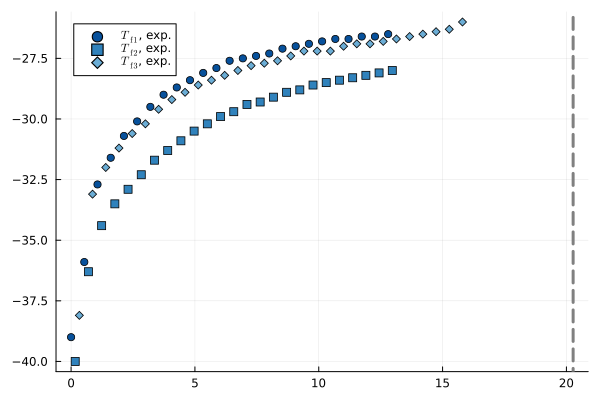
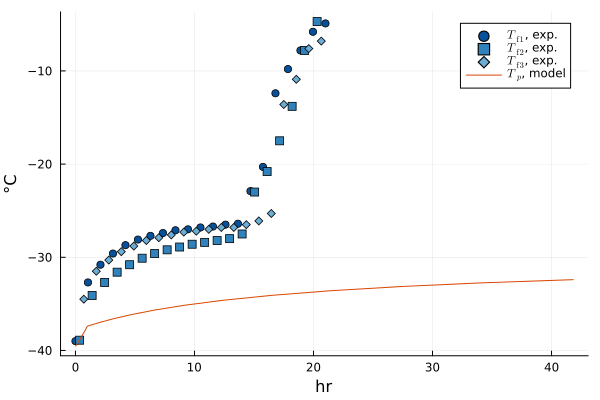
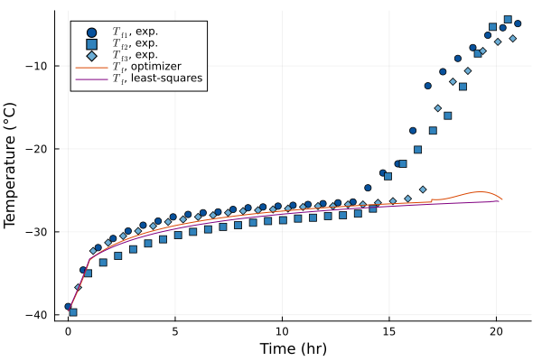

Imports
LyoPronto is this package. It reexports several other packages, so after using LyoPronto, you have effectively also done using Unitful and a few others.
using LyoProntoThese are other packages that I use in the test suite, but you can use others in their place. TypedTables provides a lightweight table structure, not as broadly flexible as a DataFrame but great for our needs
using TypedTables, CSVOptimization provides a common interface to a variety of optimization packages, including Optim. LineSearches gives a little more granular control over solver algorithms for Optim.
using Optimization, OptimizationOptimJL
using LineSearchesPlots is a frontend for several plotting packages, and its companion package StatsPlots has a very nice macro I like.
using Plots
using StatsPlots: @df
using LaTeXStringsSavitzkyGolay is a lightweight package for a well-known smoothing algorithm.
using SavitzkyGolayRead in process data
# Data start at 8th row of CSV file.
# This needs to point to the right file, which for documentation is kinda wonky
procdata = CSV.read(joinpath(@__DIR__, "..", "..", "example", "2024-06-04-10_MFD_AH.csv"), Table, header=8)
# MicroFD, used for this experiment, has a column indicating primary drying
pd_raw = filter(row->row.Phase == 4, procdata)
# Count time from the beginning of experiment
t = uconvert.(u"hr", pd_raw.CycleTime .- pd_raw.CycleTime[1])
# At midnight, timestamps revert to zero, so catch that case
for i in eachindex(t)[begin+1:end]
if t[i] < t[i-1]
t[i:end] .+= 24u"hr"
end
end
# Rename the columns we will use, and add units
pd_data = map(pd_raw) do row
# In the anonymous `do` function, `row` is a row of the table.
# Return a new row as a NamedTuple
(pirani = row.VacPirani * u"mTorr",
cm = row.VacCPM * u"mTorr",
T1 = row.TP1 * u"°C",
T2 = row.TP2 * u"°C",
T3 = row.TP4 * u"°C", # Quirk of this experimental run: T3 slot was empty
Tsh = row.ShelfSetPT * u"°C",
)
end
pd_data = Table(pd_data, (;t)) # Append time to tableTable with 7 columns and 1268 rows:
pirani cm T1 T2 T3 Tsh t
┌────────────────────────────────────────────────────────────────────────
1 │ 160 mTorr 95 mTorr -39.0 °C -39.6 °C -39.6 °C -38.9 °C 0//1 hr
2 │ 153 mTorr 91 mTorr -39.4 °C -39.8 °C -39.7 °C -38.3 °C 1//60 hr
3 │ 165 mTorr 100 mTorr -39.5 °C -39.9 °C -39.8 °C -37.7 °C 1//30 hr
4 │ 162 mTorr 100 mTorr -39.5 °C -39.9 °C -39.8 °C -37.1 °C 1//20 hr
5 │ 160 mTorr 100 mTorr -39.4 °C -40.0 °C -39.8 °C -36.5 °C 1//15 hr
6 │ 158 mTorr 100 mTorr -39.4 °C -40.0 °C -39.7 °C -35.9 °C 1//12 hr
7 │ 157 mTorr 100 mTorr -39.4 °C -40.0 °C -39.7 °C -35.3 °C 1//10 hr
8 │ 157 mTorr 100 mTorr -39.4 °C -40.0 °C -39.7 °C -34.7 °C 7//60 hr
9 │ 157 mTorr 100 mTorr -39.4 °C -40.0 °C -39.6 °C -34.1 °C 2//15 hr
10 │ 157 mTorr 100 mTorr -39.3 °C -40.0 °C -39.6 °C -33.5 °C 3//20 hr
11 │ 157 mTorr 100 mTorr -39.2 °C -40.0 °C -39.4 °C -32.9 °C 1//6 hr
12 │ 157 mTorr 100 mTorr -39.1 °C -39.9 °C -39.4 °C -32.3 °C 11//60 hr
13 │ 158 mTorr 100 mTorr -39.0 °C -39.9 °C -39.2 °C -31.7 °C 1//5 hr
14 │ 158 mTorr 100 mTorr -38.9 °C -39.8 °C -39.2 °C -31.1 °C 13//60 hr
15 │ 159 mTorr 100 mTorr -38.7 °C -39.7 °C -39.0 °C -30.5 °C 7//30 hr
16 │ 159 mTorr 100 mTorr -38.6 °C -39.6 °C -38.9 °C -29.9 °C 1//4 hr
17 │ 159 mTorr 99 mTorr -38.5 °C -39.5 °C -38.7 °C -29.3 °C 4//15 hr
⋮ │ ⋮ ⋮ ⋮ ⋮ ⋮ ⋮ ⋮Identify one definition of end of primary drying with Savitzky-Golay filter
# Filter: window width of 91, cubic polynomial, second derivative
pir_der2 = savitzky_golay(pd_data.pirani, 91, 3, deriv=2, rate=1/u"minute").y
# The end of drying: where the second derivative is maximized, ignoring the start of drying
# Typically lands between the onset and offset of Pirani drop
t_end = pd_data.t[argmax(pir_der2[1u"hr" .< pd_data.t .< 50u"hr" ])] + 1u"hr"18259//900 hrPlots provides a very convenient macro @df which inserts table columns into a function call, which is very handy for plotting.
@df pd_data plot(:t, :pirani, label="Pirani")
@df pd_data plot!(:t, :cm, label="CM")
tendplot!(t_end) # Use a custom recipe provided by LyoPronto for plotting t_end
savefig("pirani.svg");
Plot the temperature data, with another plot recipe
To check that everything looks right, plot the temperatures, taking advantage of a recipe from this package, as well as the L"[latex]" macro from LaTeXStrings. We can also exploit the @df macro from StatsPlots to make this really smooth.
@df pd_data exptfplot(:t, :T1, :T2, :T3)
@df pd_data plot!(:t, :Tsh, label=L"T_{sh}", c=:black)
savefig("exptemps.svg");
Based on an examination of the temperature data, we want to go only up to the "temperature rise" commonly observed in lyophilization near (but not at) the end of drying. To pass this information on to the least-squares fitting routine, pass the temperatures up to the end of primary drying into a PrimaryDryFit object. To be clear, no fitting happens yet: this object just wraps the data up for fitting.
fitdat_all = @df pd_data PrimaryDryFit(:t, (:T1[:t .< 13u"hr"],
:T2[:t .< 13u"hr"],
:T3[:t .< 16u"hr"]),
t_end)
# There is a plot recipe for this fit object
plot(fitdat_all)
savefig("pdfit.svg"); By passing all three temperature series to PrimaryDryFit, this will compare model output to all three temperature series at once.
Set up model
# Vial geometry
# Ran with a 10mL vial, not strictly a 10R but with similar dimensions
ri, ro = get_vial_radii("10R")
Ap = π*ri^2
Av = π*ro^2
# Formulation parameters
csolid = 0.05u"g/mL" # g solute / mL solution
ρsolution = 1u"g/mL" # g/mL total solution density
# Provide some guess values for Rp, partly as a dummy for the model
R0 = 0.8u"cm^2*Torr*hr/g"
A1 = 14u"cm*Torr*hr/g"
A2 = 1u"1/cm"
Rp = RpFormFit(R0, A1, A2)
# Fill
Vfill = 3u"mL"
hf0 = Vfill / Ap
# Cycle parameters
pch = RampedVariable(100u"mTorr") # constant pressure
T_shelf_0 = -40.0u"°C" # initial shelf temperature
T_shelf_final = -10.0u"°C" # final shelf temperature
ramp_rate = 0.5 *u"K/minute" # ramp rate
# Ramp for shelf temperature: convert to Kelvin because Celsius doesn't do math very well
Tsh = RampedVariable(uconvert.(u"K", [T_shelf_0, T_shelf_final]), ramp_rate)
# If we actually know the heat transfer as a function of pressure, we can use this form.
# KC = 6.556e-5u"cal/s/K/cm^2"
# KP = 2.41e-3u"cal/s/K/cm^2/Torr"
# KD = 2.62u"1/Torr"
# Kshf = RpFormFit(KC, KP, KD)
# But for now, treat it as a constant guess
Kshf = ConstPhysProp(5.0u"W/m^2/K")
po = ParamObjPikal([
(Rp, hf0, csolid, ρsolution),
(Kshf, Av, Ap),
(pch, Tsh)
]);As a sanity check, run the model to see that temperatures are in the right ballpark
prob = ODEProblem(po)
sol = solve(prob, Rodas3())
@df pd_data exptfplot(:t, :T1, :T2, :T3)
modconvtplot!(sol, label=L"$T_p$, model")
savefig("modelpre.svg");
Fit model parameters to match data
Optimization algorithms are happiest when they can run across all real numbers. So we use TransformVariables.jl to map all reals to positive values of our parameters, with sensible scales. The TVExp transform maps all real numbers to positive values, and the TVScale transform scales the value to a more reasonable range. The transform ConstWrapTV is defined in LyoPronto, and makes a constant callable function from a value.
Kshf needs to be callable. Rp needs to be a callable, and the RpFormFit struct does that; by passing the new values with Rp as a NamedTuple, the constructor for ParamObjPikal will unpack it.
trans_KRp = as((Kshf = ConstWrapTV() ∘ TVScale(Kshf(0)) ∘ TVExp(),
Rp=as((R0 = TVScale(R0) ∘ TVExp(),
A1 = TVScale(A1) ∘ TVExp(),
A2 = TVScale(A2) ∘ TVExp(),))))
# Or, using a convenience function for the same,
trans_KRp = KRp_transform_basic(Kshf(0), R0, A1, A2)
trans_Rp = Rp_transform_basic(R0, A1, A2)[1:3] NamedTuple of transformations
[1:3] :Rp → NamedTuple of transformations
[1:1] :R0 → TVScale(0.8 hr cm^2 Torr g^-1) ∘ asℝ₊
[2:2] :A1 → TVScale(14 hr cm Torr g^-1) ∘ asℝ₊
[3:3] :A2 → TVScale(1 cm^-1) ∘ asℝ₊With this transform, we can set up the optimization problem. A good first step is to make sure the guess value is reasonable. In this case, I think that we should get good results with a zero guess
pg = fill(0.0, 4) # 4 parameters to optimize
# Not plotted since will produce the same as above, but this computes a solution
@time LyoPronto.gen_sol_pd(pg, trans_KRp, po)
# The optimization problem needs to know the transform, other parameters, and what data to fit
pass = (trans_KRp, po, fitdat_all)
# The objective function will be obj_pd, which is compatible with automatic differentiation
obj = OptimizationFunction(obj_pd, AutoForwardDiff())
# Solve the optimization problem
optalg = LBFGS(linesearch=LineSearches.BackTracking())
opt = solve(OptimizationProblem(obj, pg, pass), optalg)retcode: Success
u: 4-element Vector{Float64}:
1.0208387894363469
0.15233775749093437
0.4118719496773966
0.19355402445669115We should graph the results to see that they make sense.
sol_opt = gen_sol_pd(opt.u, pass...)
# Plot recipe for several temperature series:
@df pd_data exptfplot(:t, :T1, :T2, :T3)
# And compare to the model output:
modconvtplot!(sol_opt)
savefig("modelopt.svg");
And to get out our fit values, use the transform on the values our optimizer gives
po_opt = transform(trans_KRp, opt.u)(Kshf = ConstPhysProp(13.87760933137611 W K^-1 m^-2), Rp = (R0 = 0.9316428053470907 hr cm^2 Torr g^-1, A1 = 21.134975594878007 hr cm Torr g^-1, A2 = 1.213554946427211 cm^-1))This page was generated using Literate.jl.